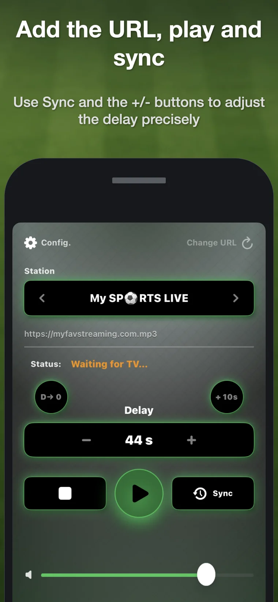
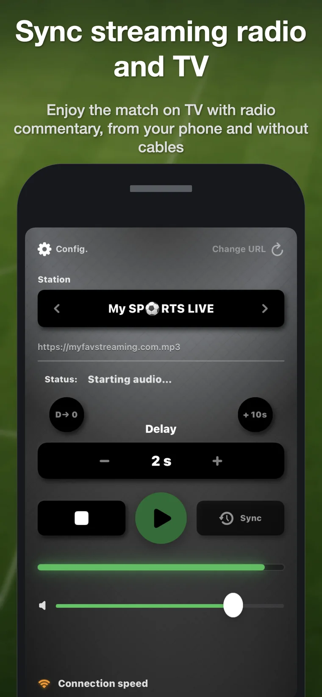
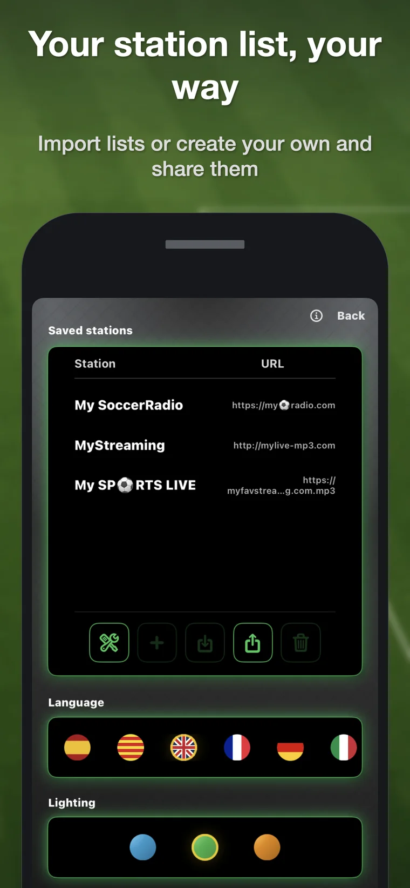

1. Add a station
Add a compatible direct stream URL or import a TXT, M3U or JSON station list.
Soccer RadioTv Sync delays a compatible online radio stream directly on your iPhone, so the commentary matches the TV picture when streaming latency puts the radio ahead.

When a sports broadcast reaches your TV through streaming, the picture can arrive several seconds later than the radio commentary. You hear the goal before you see it. Soccer RadioTv Sync brings back the classic experience of watching the match on TV while listening to your preferred radio commentator.
Add a compatible direct stream URL or import a TXT, M3U or JSON station list.
Tap Sync when you hear a recognizable moment on the radio, then tap again when that moment appears on TV.
The app calculates the delay automatically. Use + and – for precise manual adjustment.
Most matches only need about 10–40 seconds, but extra range is available when needed.
Keep listening while the iPhone is locked or while using other apps.
Save several stream URLs for the same station and switch when one has a different latency.
Designed for stable playback without turning the phone into a heavy desktop-style setup.
Create, import, export and share TXT, M3U and JSON lists.
Localized for an international audience, including English, Spanish, German and Italian.
Dedicated delay radios exist, but they require additional hardware and are generally much more expensive. DIY solutions with a computer, cables or VLC can work, but they are cumbersome during a match. Soccer RadioTv Sync runs on the iPhone you already carry and works with internet streams—not only classic stations that also broadcast online, but also online-only radio stations with no AM or FM frequency.
The current version does not include preinstalled stations. You add a compatible direct stream URL or import a station list. This keeps the app international and independent of any single broadcaster. A simpler station-discovery workflow is being developed.


Yes. Soccer RadioTv Sync plays a compatible online radio stream and applies an adjustable delay directly on the iPhone.
Tap Sync when you hear a recognizable moment on the radio, then tap it again when the same moment appears on TV. The app calculates the delay, and you can fine-tune it with + and –.
It works with compatible direct online stream URLs. The current version does not include stations, so you add a URL or import a list.
It works with internet streams. That includes traditional broadcasters that publish an online stream and online-only stations that have no AM or FM frequency.
It is designed for situations where radio commentary reaches you before the TV picture, which is common when the television broadcast has streaming latency.
No. The current version is a one-time purchase with no advertising and no account requirement.
The first prototype ran privately on a 2013 MacBook. It already used the circular-buffer core behind the synchronization system. After months of personal use, friends convinced Alfonso to turn it into an iPhone app—because nobody wanted to bring out a laptop just to listen to the radio during a match.